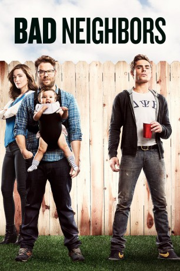

gesehen am 14.09.2016
gesehen am 14.09.2016Alternativ: Neighbors gesehen am 14.09.2016
 
 IMDB-Wertung: 6.3 / 10
IMDB-Wertung: 6.3 / 10  Metascore:
Metascore: 
Kelly und Mac Radner sind ein leicht spießiges Ehepaar, das mit seinem Baby in einer beschaulichen Vorstadtsiedlung wohnt. Die Radners lieben die Ruhe in ihrer netten Nachbarschaft und begrüßen Neuankömmlinge mit offenen Armen. Doch als in das Haus nebenan eine feierwütige Studentenverbindung einzieht, ist es vorbei mit dem Frieden. Kelly und Mac beginnen einen Kleinkrieg mit ihren neuen Nachbarn, von denen ihnen vor allem der rüpelhafte Präsident der Verbindung, Teddy, ein Dorn im Auge ist. Nachdem Mac und Kelly eines Abends die Polizei rufen, kommt der Nachbarschaftskrieg auf ein neues Level - im Anschluss steht die Verbindung kurz davor, aufgelöst zu werden. Aber die Studenten planen einen letzten Streich, der den Kampf in ihrem Sinne entscheiden soll…
Jahr: 2014
Dauer: 97 Minuten
FSK: 12
Land: USA Studio: Universal PicturesTonspuren: DTS - ,
Untertitel: Deutsch, Englisch,
Auflösung: 1080p (1920x800) Größe: 9758 MB
Genre: Komödie
Regisseur: Nicholas Stoller
Drehbuch: Andrew Jay Cohen, Brendan O'Brien
Soundtrack: Michael Andrews
Darsteller:
 Seth Rogen als Mac Radner
Seth Rogen als Mac Radner Rose Byrne als Kelly Radner
Rose Byrne als Kelly Radner Brian Huskey als Bill Wazowkowski
Brian Huskey als Bill Wazowkowski Ike Barinholtz als Jimmy
Ike Barinholtz als Jimmy Carla Gallo als Paula
Carla Gallo als Paula Zac Efron als Teddy Sanders
Zac Efron als Teddy Sanders Dave Franco als Pete
Dave Franco als Pete Halston Sage als Brooke
Halston Sage als Brooke Christopher Mintz-Plasse als Scoonie
Christopher Mintz-Plasse als Scoonie Jerrod Carmichael als Garf
Jerrod Carmichael als Garf Craig Roberts als Assjuice
Craig Roberts als Assjuice Andy Samberg als Toga #1
Andy Samberg als Toga #1 Akiva Schaffer als Toga #2
Akiva Schaffer als Toga #2 Jorma Taccone als Toga #3
Jorma Taccone als Toga #3 Blake Anderson als Beer Pong Guy #2
Blake Anderson als Beer Pong Guy #2 Anders Holm als Beer Pong Guy #3
Anders Holm als Beer Pong Guy #3 Jake Johnson als Sebastian Cremmington
Jake Johnson als Sebastian Cremmington Hannibal Buress als Officer Watkins
Hannibal Buress als Officer Watkins Jason Mantzoukas als Doctor Theodorakis
Jason Mantzoukas als Doctor Theodorakis Lisa Kudrow als Dean Carol Gladstone
Lisa Kudrow als Dean Carol Gladstone Jesse Heiman als The Babysitter
Jesse Heiman als The Babysitter Randall Park als Rep
Randall Park als Rep Natasha Leggero als Prostitute
Natasha Leggero als Prostitute Chasty Ballesteros als Alecia , uncredited
Chasty Ballesteros als Alecia , uncredited Mark Casimir Dyniewicz als Homeless #3 , uncredited
Mark Casimir Dyniewicz als Homeless #3 , uncreditedDatei: X:\2-Dilogie(A-F)\Bad Neighbors\Bad Neighbors (2014, FSK12, 1920x800).mkv seit 05.05.2015
Festplatte: HD Collection-2(A-Z)-3(A-M)
 Alle Filme aus Gruppe '2-Dilogie(A-F)\Bad Neighbors'
Alle Filme aus Gruppe '2-Dilogie(A-F)\Bad Neighbors'